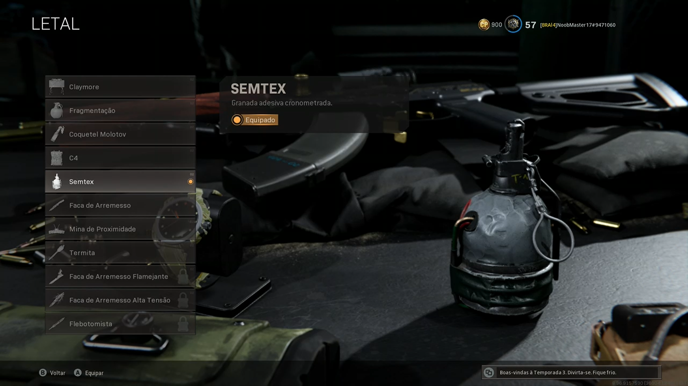
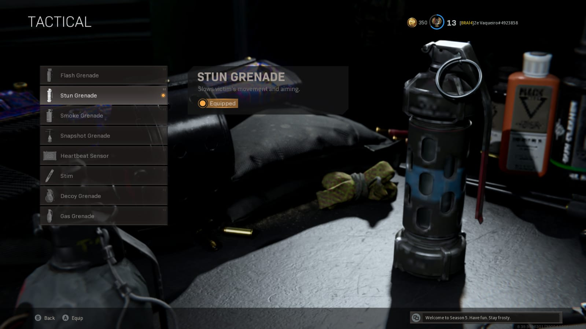

Sensibilidade
A primeira e a dica e a mais importante é saber configurar seu controle ou MT (mouse e teclado) de acordo com sua jogabilidade. Essa parte é mais importante ainda para os jogadores de controle, pois como no controle têm menos botões, o jogador precisa saber configurar ele para que fique o melhor possível para seu estilo de jogo.
Controles
A segunda dica seria sobre os botões que você utiliza para realizar cada ação dentro do jogo. Isso é muito importante ainda mais se estiver jogando com um control, já que no menu de opções da para trocar o botão de pular pelo de agachar por exemplo, então o certo é testar e ver qual fica melhor para você.
FOV
A terceira dica seria sobre o "FOV" ou campo de visão, é uma feature disponível somente para jogadores do PC no momento, mas que já foi confirmado para os consoles pela Activision, só não se sabe quando ela vai chegar. Se você joga no computador e não usa o FOV está desperdiçando uma opção que muda totalmente o jogo, já que aumentar ele faz seu campo de visão aumentar e assim ver mais coisas ao mesmo tempo durante uma partida. Isso é considerado o principal ponto para que todos os Pro Players usem o PC para competir, já que não ter o FOV é uma grande diferença.
Slide Cancel
A quarta dica é sobre o famoso "slide cancel". Ele é uma "habilidade" descoberta pelos jogadores, que consiste em clicar 3 vezes no botão de agachar 2 vezes seguidas, para recarregar a corrida tática. Segue o link de um vídeo onde isso é explicado melhor.
Como fazer o slide cancelVantagem Azul

Acelerando
O "Acelerando" é a vantagem azul mais utilizada, isso porque ele dobra a duração da sua corrida tática e faz você andar mais rápido enquanto estiver agachado.EOD
A segunda mais utilizada é o "EOD". Ele faz com que seu personagem não seja derrubado quando uma granada letal for usada contra ele.Sangue frio
A terceira mais utilizada é o sangue frio, que o torna imune a miras térmicas, a vantagem Alerta vermelho e a vantagem Combat scout.Vantagem Vermelha

Massacre
O "Massacre" é vantagem mais utilizada pois ele possibilita você utilizar duas armas primárias, o considerado perfeito para pegar na primeira caixa.Espectro
A segunda mais uitlizada é o "Espectro", mais conhecido como ghost; ele é tão usado assim pois ele torna seu personagem imune ao "VANT" e ao radar pessoal, ou seja, torna mais difícil para seus oponentes saberem onde você está.Alerta vermelho
A terceira mais utilizada é o "Alerta vermelho"; essa vantagem é muito interessante para quem gosta de rushar constantemente, pois quando algúem mira em você, sua tela pisca em vermelho apontando de onde vem a mira.Temperado
Essa vantagem foi lançada na season 5 e está sendo bastante utilizada. Ela faz com que sua 3 placas de blindagem virem 2, isso ajuda você a voltar para a fight mais rápido e pegar seu oponente desprevenido.Vantagem Amarela

Amplificado
A mais utilizada e em quase 100% das classes é o "Amplificado", ele faz com que você troque de arma instantaneamente, sem nenhua animação, o que ajuda demais durante uma trocação intensa em que suas balas acabam e então é necessário trocar pra outr arma.Combatente Experiente
A segunda mais usada é o "Combatente experiente", isso porque ele "countera" de certa formas as granadas táticas, diminuindo o efeito delas.Rastreador
A terceira mais usada é o "Rastreador" ; ele é muito útil para que você não perca seu oponente de "Vista", já que ele deixa um rastro das pegadas de um adversário assim que ele é avistado de perto.Combat Scout
Também foi lançada na season 5Com ele, ao acertar um tiro o inimigo fica "spotado" para o time inteiro por alguns segundos e ainda aparece atrás da parede para você.Equipamentos Letais
Os equipamentos letais são aqueles que tiram uma boa quantidade de vida do seu inimigo, e as mais indicadas a serem utilizadas são a "Semtex", pois ela tem um "range" muito bom e apenas uma dela tira completamente as placas do oponente; outra muita boa é a "C4", pois só é necessátrio uma dela para derrubar um adversário que não esteja utilizando "EOD" ou também para destruir um carro. Além dessas duas, a faca de arremesso também é muito utilizada pelos jogadores mais experientes , já que usando ela você não gasta munição para finalizar um oponente derrubado, apenas arremessa a faca nele.
Equipamentos Táticos
Os equipamentos táticos são aqueles que dão algumas vanatagens durante a "fight", entretanto, diferente dos letais, os táticos não tiram a vida do inimigo, eles apenas atrapalham a visão, ou a movimentação. Os mais indicados a serem usados são a "granada de concussão", o item considerado mais quebrado do jogo e que nunca foi nerfado. Ele é tão "OP" assim porque deixa seu oponente com a movimentação completamenete paralisada, facilitando para quem jogou uma stun matar seu inimigo sem nem sofrer dano. Os outro dois que podem ser usados são a "granada de luz", que gera um clarão branco na tela do adverssário, "cegando" ele por alguns segundos, e por último o "radar pessoal", que mostra a posição dos inimigos e a distância, isso se eles não estiverem usando o ghost.